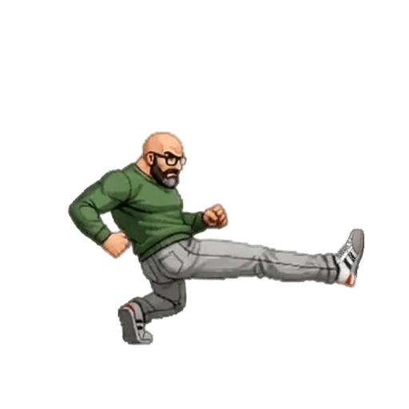
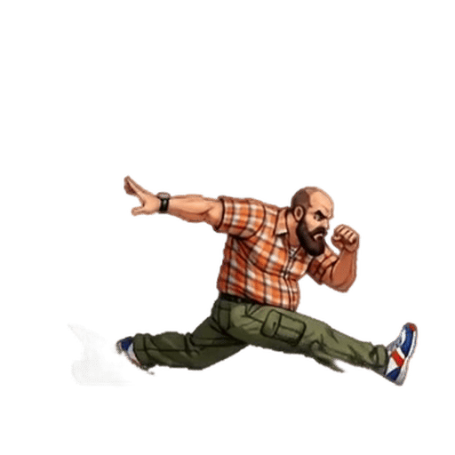
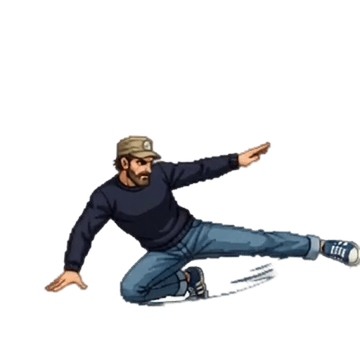
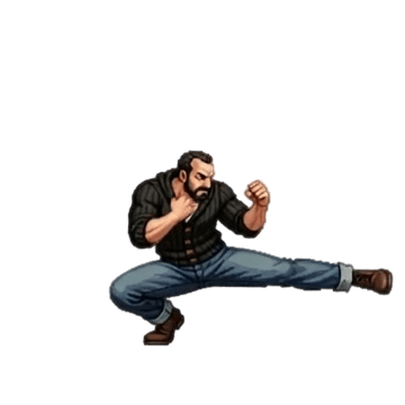
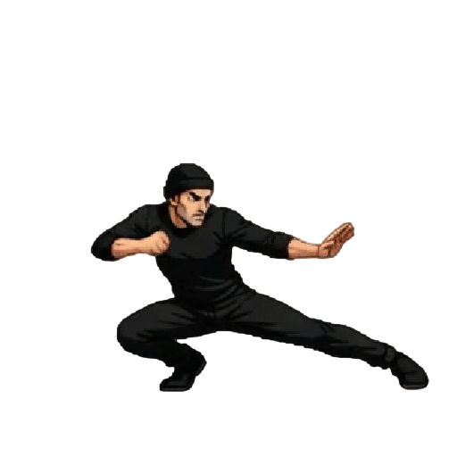
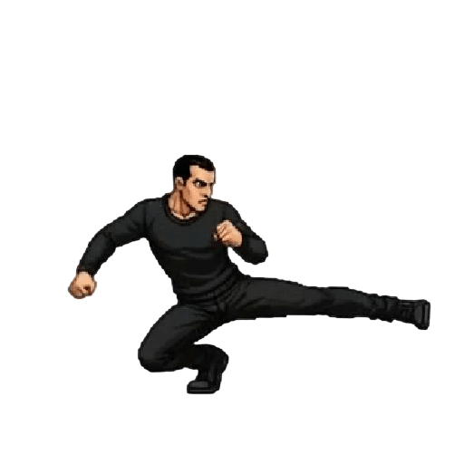
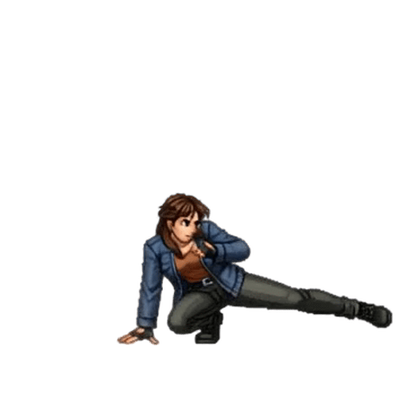
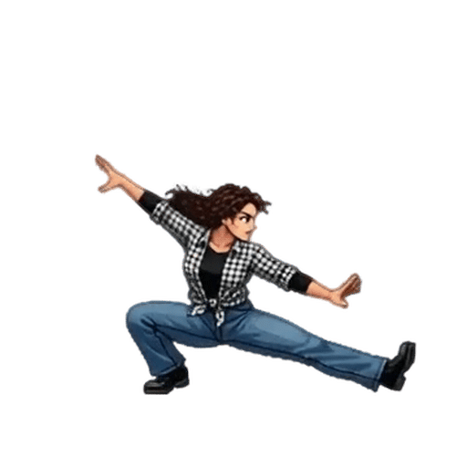
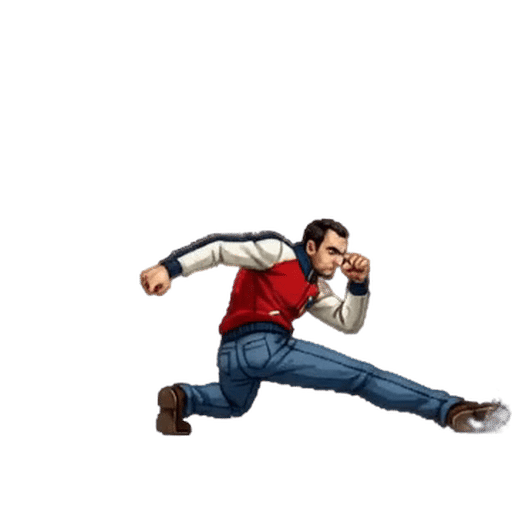

Apri Calcio medio bassoCalcio medio basso · Timing
23 novembre 2026. Nove personaggi. La posa scelta di massima estensione inizia a 0,50 s; il ciclo completo termina a 0,80 s a velocità 1×, come il calcio medio. Le durate dei frame variano prima e dopo l’impatto.
Tutti gli spritesheet includono il ritorno in guardia accovacciata: riproduzione solo in avanti, con loop attivo per default. Applicati una sola volta i tagli salvati su AutoSprite: da 30 a 40 frame per personaggio. La velocita remota salvata (2x) resta informativa e non moltiplica il timing della demo. Nessun ritaglio aggiuntivo dei margini, nessuna variazione di scala. Le pose sul plateau possono differire di pochi pixel.
323 celle RGBA confrontate con i file scaricati prima di eventuali ritocchi locali. Gli interventi di pulizia sono registrati nei manifest e negli atlas, preservando gli hash d’importazione. Nessuna generazione AutoSprite, 0 crediti.
Controllo alpha dei 323 frame: spazi naturali tra gli arti, scie e polvere conservati. La trasparenza sorgente sulla punta della scarpa di Alberto è stata corretta localmente nei frame 12–24 (da 1): 13 fotogrammi, 11.772 pixel. La ricostruzione è limitata alle maschere verificate, con tutti i pixel esterni invariati. Confronto prima/dopo e alpha. Confronto su bianco, nero e canale alpha.
Timing CSV
| Personaggio | Impatto | Frame da 1 | Durata frame prima / dopo (ms) | Intervallo sorgente da 0 |
|---|
| ALBERTO |  | 13 / 35 | 41.667 / 13.043 | 0–34 |
|---|
| FABIO-CLARA |  | 16 / 39 | 33.333 / 12.500 | 0–38 |
|---|
| SBOZ |  | 20 / 40 | 26.316 / 14.286 | 0–39 |
|---|
| PIPPO |  | 15 / 39 | 35.714 / 12.000 | 0–38 |
|---|
| PEPPO |  | 11 / 35 | 50.000 / 12.000 | 0–34 |
|---|
| Oscar |  | 16 / 36 | 33.333 / 14.286 | 0–35 |
|---|
| Elisa |  | 12 / 30 | 45.455 / 15.789 | 0–29 |
|---|
| FRA-TAVARONE |  | 15 / 35 | 35.714 / 14.286 | 0–34 |
|---|
| MARSAN |  | 12 / 34 | 45.455 / 13.043 | 0–33 |
|---|